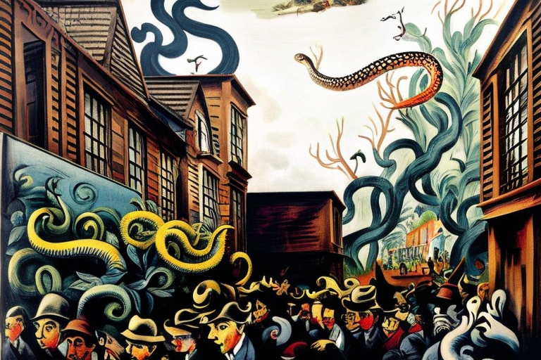
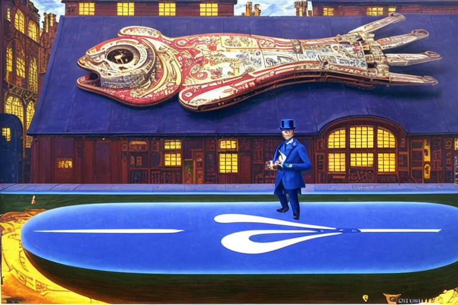
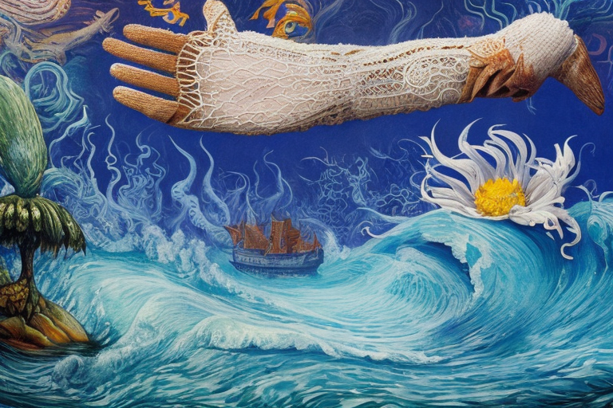

Το δηλητήριο της κόμπρας και η επιδημία
Αρχική Σελίδα
Πίνακας Περιεχομένων
Εμφάνιση του φιδιού της ζούγκλας
Στην πυκνή και επικίνδυνη ζούγκλα της Νότιας Αμερικής, γεννήθηκε ένα νέο είδος κόμπρας. Το δηλητηριώδες φίδι δεν έμοιαζε με καμία άλλη κόμπρα, με ένα λαμπερό, ιριδίζον μαύρο δέρμα που άστραφτε υπό το φως του ήλιου. Τα λέπια της ήταν σκληρά και ανθεκτικότερα άλλων κομπρών, παρέχοντας της μια φυσική πανοπλία που την προστάτευε από τα αρπακτικά και της προσέδιδε μια πολύ εκφοβιστική μορφή.
Το νέο είδος, άγνωστο μέχρι τώρα στην επιστήμη, είχε εξελιχθεί μετά αιώνων ζωής στο σκοτεινό και υγρό περιβάλλον της ζούγκλας. Είχε αναπτύξει ισχυρούς μύες στο σώμα και την ουρά του, επιτρέποντάς του να επιτίθεται με απίστευτη ταχύτητα και δύναμη. Το δηλητήριό της ήταν ισχυρότερο από οποιαδήποτε άλλη κόμπρα, προκαλώντας βασανιστικό πόνο και παράλυση στα θύματά της.
Ο βιότοπος της κόμπρας ήταν η ζούγκλα, όπου ζούσε στους πυκνούς βούρκους και τα δέντρα. Ήταν ένας ικανός κυνηγός, που χρησιμοποιούσε τις κοφτερές αισθήσεις του για να παρακολουθεί το θήραμα και τα αστραπιαία αντανακλαστικά του για να χτυπήσει την κατάλληλη στιγμή. Τα θηράματά του κυμαίνονταν από μικρά τρωκτικά έως μεγαλύτερα ζώα όπως οι πίθηκοι και ακόμη και άλλα φίδια.
Μια μέρα, η κόμπρα άρχισε να βγαίνει εκτός της ζούγκλας, και να περιφέρεται τριγύρω της κοντινότερης πόλης. Η παρουσία της αρχικά πέρασε απαρατήρητη, καθώς το πλάσμα γλιστρούσε μέσα στις σκιές των δρόμων και των στενών. Αλλά σύντομα, άρχισαν να εμφανίζονται αναφορές για ένα θανατηφόρο νέο φίδι στην περιοχή και πανικός εξαπλώθηκε στην πόλη.
Το κλιμάκιο ελέγχου επικίνδυνων ζώων κλήθηκε για να περιορίσει το νέο είδος, αλλά οι προσπάθειές τους απεδείχθησαν μάταιες. Η κόμπρα ήταν πολύ πονηρή και δυνατή για να τη παγιδεύσουν. Καθώς περνούσαν οι μέρες, οι αυτόπτες μάρτυρες του ερπετού αυξάνοταν και το πλάσμα άρχισε να γίνεται πιο τολμηρό.
Σύντομα, όλη η πόλη κατέπεσε σε χάος. Οι άνθρωποι φοβόντουσαν να βγουν απ ́τα σπίτια τους και η κυβέρνηση κήρυξε κατάσταση έκτακτης ανάγκης. Φαινόταν ότι κανείς δεν μπορούσε να σταματήσει το νέο είδος κόμπρας, οποίο δεν ήταν μόνο ένα φίδι, αλλά μια ολόκληρη αποικία από γενετικά μεταλλαγμένες κόμπρες που εξελισσόταν κρυφά στα βάθη της ζούγκλας.
Εν τέλει, μια ομάδα γενναίων κυνηγών φιδιών που αποτόλμησαν να αντιμετωπίσουν την αποικία κατά μέτωπο. Οπλισμένοι με γνώση για το νέο είδος μπόρεσαν να εντοπίσουν την αποικία και να τα αιχμαλωτίσουν όλα.
Η αναπάντεχης επιδημίας

Όμως παρά τις προσπάθειες των κυνηγών φιδιών, η ζημιά είχε ήδη προκληθεί. Το νέο είδος κόμπρας είχε εξαπολύσει ένα κύμα καταστροφής και τρόμου στην πόλη και το δηλητήριό μόλυνε όλους όσους ήρθαν σε επαφή μαζί του.
Το δηλητήριο του νέου είδους κόμπρας ήταν ιδιαίτερα ισχυρό και θανατηφόρο. Όχι μόνο προκαλούσε έντονο πόνο και παράλυση στα θύματά του, αλλά εξαπλωνόταν μέσω της σωματικής επαφής. Αυτό σήμαινε ότι όποιος είχε δαγκωθεί ή αγγιχθεί από τα δηλητηριώδη φίδια γινόταν στη συνέχεια φορέας του δηλητηρίου, μεταδίδοντάς το σε όποιον ερχόταν σε επαφή.
Τα σημάδια της δράσης του δηλητηρίου ήταν εξ’αρχής δυσδιάκριτα. Οι άνθρωποι που είχαν δαγκωθεί ή αγγιχτεί από τα φίδια άρχισαν να αισθάνονται μια αίσθηση κόπωσης και αδυναμίας. Νόμιζαν ότι ήταν απλώς τα φυσιολογικά συμπτώματα του δαγκώματος φιδιού, αλλά έκαναν λάθος.
Καθώς το δηλητήριο άρχισε να δουλεύει, το δέρμα των ανθρώπων έπαιρνε μια αρρωστημένη πράσινη απόχρωση και η όρασή τους θόλωνε και τρεμόπαιζε. Το σώμα τους καταντούσε αδύναμο και ασταθές, άρχισαν να βιώνουν έντονο πόνο και παράλυση.
Δεν πέρασε πολύς καιρός προτού η πόλη βρεθεί εν μέσω πλήρους επιδημίας. Οι άνθρωποι πέθαιναν κατά εκατοντάδες, και δεν υπήρχε τρόπος να σταματήσει η εξάπλωση του δηλητηρίου. Όσοι είχαν δαγκωθεί ή αγγιχτεί, μετέδιδαν γρήγορα το δηλητήριο σε άλλους και φαινόταν ότι δεν υπήρχε τέλος.
Οι δρόμοι της πόλης ήταν αδιάβατοι απο σώματα όσων είχαν υποκύψει στο δηλητήριο. Ο αέρας ήταν βαρύς απ ́τη τη δυσωδία του θανάτου και η κάποτε ακμάζουσα μητρόπολη είχε μετατραπεί σε μια έρημη γη.
Οι θεραπευτές ιατροί εργάζονταν όλο το εικοσιτετράωρο για να προσπαθήσουν να ανακαλύψουν θεραπεία για το δηλητήριο, αλλά οι προσπάθειές τους απέτυχαν εξ’ολοκλήρου. Φαινόταν ότι το νέο είδος κόμπρας είχε εξαπολύσει ένα όπλο που ήταν πολύ ισχυρό για να το ξεπεράσει ακόμη και η πιο προηγμένη ιατρική επιστήμη.
Ο Μπομπ Ο’Κόνορ: η φωνή της λογικής

Καθώς η πόλη βρισκόταν σε ερείπια και η επιδημία του δηλητηρίου μαινόταν, ένας παρουσιαστής ειδήσεων εμφανίστηκε ως φάρος ελπίδας και λογικής μέσα στο χάος. Το όνομά του ήταν Μπομπ Κόννορ ένας βράχος δημοσιογραφικής ακεραιότητας και βαρύτητας του λόγου του.
Καθώς η έκτακτη ανάγκη για το δηλητήριο εξαπλώθηκε, ο Μπομπ εξέπεμψε στα ερτζιανά ώστε να προειδοποιήσει τους πολίτες για τους κινδύνους που αντιμετώπιζαν. Με φωνή επιβλητική και καταπραϋντική προέτρεψε όλους να μείνουν στο σπίτι και να αποφύγουν κάθε περιττή επαφή με άλλους.
“Καλησπέρα, πολίτες της πόλης”, άρχισε. “Απευθύνομαι σε εσάς απόψε με βαριά καρδιά, γιατί αντιμετωπίζουμε μια άνευ προηγουμένου κρίση. Το δηλητήριο του νέου είδους κόμπρας εξαπλώνεται στην πόλη μας ταχύτατα και πρέπει όλοι να πράξουμε ότι μπορούμε για να το περιορίσουμε.”
Το μήνυμα του Μπομπ ήταν σαφές και ξεκάθαρο, μείνετε στο σπίτι, αποφύγετε την επαφή με άλλους και κάντε ό,τι είναι δυνατόν για να αποτρέψετε την εξάπλωση του δηλητηρίου. Γνώριζε ότι η ευθύνη για την ασφάλεια των πολιτών δεν βαρύνει μόνο τα ίδια τα άτομα, αλλά και το κράτος.
Και έτσι, καθώς ο Μπομπ συνέχισε να εκπέμπει το μήνυμα της προσοχής και της υπευθυνότητάς, το κράτος ανέλαβε δράση. Εφάρμοσαν αυστηρά μέτρα απομόνωσης, κλείνοντας όλους τους δημόσιους χώρους και θεσπίζοντας απαγόρευση κυκλοφορίας που ίσχυε αυστηρά. Αστυνομικό και στρατιωτικό προσωπικό περιπολούσε στους δρόμους, διασφαλίζοντας ότι κανείς δεν παραβίαζε τους κανόνες, διακινδυνεύοντας τη διάδοση του δηλητηρίου.
Το κράτος δημιούργησε επίσης ένα δίκτυο πρόχειρων νοσοκομείων και κέντρων απομόνωσης, όπου όσοι είχαν δαγκωθεί ή αγγιχτεί από το δηλητήριο μπορούσαν να λάβουν θεραπεία και φροντίδα. Εργάζονταν όλο το εικοσιτετράωρο για να παράγουν ένα αντίδοτο και να το διανείμουν σε όσους το χρειάζονταν περισσότερο.
Όμως οι προσπάθειες του κράτους δεν ήταν αρκετές από μόνες τους. Ήταν ευθύνη του κάθε πολίτη να κάνει τον ρόλο του στην αποτροπή της εξάπλωσης του δηλητηρίου. Και έτσι, το μήνυμα του Μπομπ είχε βαθιά απήχηση στους ανθρώπους της πόλης και άκουσαν την έκκλησή του για δράση.
Έμειναν στο σπίτι, όσο το δυνατόν περισσότερο, βγαίνοντας έξω μόνο όταν ήταν απαραίτητο για να συγκεντρώσουν τρόφιμα ή προμήθειες. Φορούσαν μάσκες και γάντια για να προστατεύουν τον εαυτό τους και τους άλλους και φρόντιζαν να πλένουν τα χέρια τους και να απολυμαίνουν τακτικά το περιβάλλον τους.
Προστατευτικά μέτρα

Η πόλη άρχισε σιγά σιγά να αντιμετωπίζει τη σκιά της επιδημίας του δηλητηρίου, ο Μπομπ Ο’ Κόνορ συνέχισε να αναφέρει τα τελευταία στιγμιότυπα στον αγώνα ενάντια του θανατηφόρου είδους κόμπρας. Υπήρξε μια εξέλιξη η οποία προκάλεσε σάλο στην πόλη, η απόφαση του κράτους να επιβάλει υποχρεωτικά γάντια σε όλους τους δημόσιους χώρους και τις παραλίες.
“Καλησπέρα, πολίτες της πόλης”, ξεκίνησε ο Μπομπ, με το πρόσωπο του σοβαρό. ”Έχω κάποια νέα που πιθανότατα θα εκπλήξουν πολλούς από ʼσας. Η πολιτεία αποφάσισε να επιβάλει την υποχρεωτική χρήση γαντιών σε όλους τους δημόσιους χώρους και τις παραλίες, με ισχύ απο σήμερα.“
Ο Μπομπ συνέχισε να εξηγεί ότι αυτή η απόφαση ελήφθη ως μέσο αντιμετώπισης της αραίωσης του δηλητήριου στο θαλασσινό νερό της παραλίας. Εφόσον καθιστά τα ύδατα επικίνδυνα στο άγγιγμα, η πολιτεία είχε καθορίσει ότι η χρήση γαντιών μείωνε σημαντικά τον κίνδυνο έκθεσης του δηλητηρίου με στόχο την αποτροπή εξάπλωσής του.
Η ανακοίνωση εξέπληξε τους πολίτες, με πολλούς να αμφισβητοὺν την πρακτικότητα και την αποτελεσματικότητα ενός τέτοιου μέτρου. Όμως ο Μπομπ έσπευσε να καθησυχάσει τους πολίτες ότι το κράτος είχε διεξάγει εκτεταμένη έρευνα και είχε συμβουλευτεί κορυφαίους ειδικούς πριν την απόφασή αυτήν.
“Και ενώ μπορεί να φαίνεται άβολο να φοράμε γάντια μέρα νυχθημερόν, πρέπει να θυμόμαστε ότι αυτή είναι μια μικρή θυσία για να προστατεύσουμε τον εαυτό μας και τους γύρω μας”, είπε ο Μπομπ.
“Έχουμε ήδη δει τις καταστροφικές συνέπειες που μπορεί να έχει το δηλητήριο στην κοινότητά μας και δεν έχουμε την πολυτέλεια να διακινδυνεύουμε άνευ αιτίας”.
Καθώς το μήνυμα του Μπομπ εισακούσθηκε, οι πολίτες της πόλης άρχισαν να προσαρμόζονται στη νέα πραγματικότητα. Φορούσαν γάντια σε κάθε έκθεσή τους σε δημόσιο χώρο, είτε στην παραλία είτε σε άλλους δημόσιους χώρους, και είχαν συνηθίσει την αίσθηση του λατέξ ή του καουτσούκ στο δέρμα τους. Δεν ήταν άνετα, ήταν όμως απαραίτητα.
Φτερά έναντι δηλητηρίου
Παρά την εντολή της πολιτείας για υποχρεωτική χρήση γαντιών, ο Μπομπ είχε λάβει αναφορές για μια ομάδα πολιτών που αρνούνταν να συμμορφωθούν με τους κανονισμούς. Αντίθετα, είχαν αποφασίσει να πάρουν την κατάσταση στα χέρια τους και να εκπαιδεύσουν αετούς για να θηρεύσουν και να φάνε τις δηλητηριώδεις κόμπρες.
Ο Μπομπ ήξερε ότι έπρεπε να το διερευνήσει περαιτέρω, και έτσι ξεκίνησε να συναντηθεί με τους ηγέτες αυτής της ομάδας. Καθώς διέσχιζε την πόλη, δεν μπορούσε να μην παρατηρήσει την έλλειψη γαντιών σε πολλούς από τους πολίτες που συναντούσε. Ήταν ξεκάθαρο ότι δεν έπαιρναν όλοι την απειλή του δηλητηρίου στα σοβαρά και αυτό ήταν λόγος ανησυχίας.
Όταν τελικά ο Μπομπ έφτασε στα κεντρικά γραφεία της ομάδος, τον υποδέχτηκε ένας άντρας ονόματι Τζακ, ο οποίος πρωτοστατούσε στην προσπάθεια εκπαίδευσης των αετών. Ο Τζακ ήταν ένας ψηλός, τραχύς άντρας με πυκνή γενειάδα. Εξήγησε στον Μπομπ ότι είχαν αποφασίσει να πάρουν την κατάσταση στα χέρια τους επειδή δεν εμπιστεύονταν το κράτος να χειριστεί αποτελεσματικά την κατάσταση.
“Γνωρίζουμε αυτές τις κόμπρες καλύτερα από οποιονδήποτε άλλον”, είπε ο Τζακ, επιδεικνύοντας το τεράστιο αρπακτικό πτηνό γραπωμένο στο μπράτσο του. “Και ξέρουμε ότι ο καλύτερος τρόπος για να τις αντιμετωπίσουμε είναι να αμολήσουμε τους αετούς μας και θα εκτελέσουν το πολυπόθητο έργο απο μόνοι τους”.
Ο Μπομπ παρακολουθούσε καθώς ο αετός απογειώθηκε από το μπράτσο του Τζακ, πετώντας ψηλά στον ουρανό προτού βουτήξει και αρπάξει μια κόμπρα στα νύχια του. Η κόμπρα έστριβε και σύριζε, αλλά ο αετός ήταν γρήγορος και δυνατός. Σε ελάχιστα δευτερόλεπτα σκότωσε την κόμπρα και καταβρόχθιζε την σάρκα της.
Ήταν ένα τρομακτικό θέαμα, αλλά ο Μπομπ δεν μπορούσε να μην εντυπωσιαστεί από την αποτελεσματικότητα της θήρευσης του αετού. Πάντα ήξερε ότι οι αετοί ήταν ισχυρά αρπακτικά, αλλά πρώτη φορά το είδε απο πρώτο χέρι.
Τις επόμενες μέρες, ο Μπομπ ακολούθησε την ομάδα καθώς συνέχιζαν να εκπαιδεύουν τους αετούς τους και να κυνηγούν τις κόμπρες. Είδε από πρώτο χέρι πόσο αποτελεσματικές ήταν οι μέθοδοι τους και δεν μπορούσε παρά να αναρωτηθεί αν είχαν βρει μια λύση στο πρόβλημα με το δηλητήριο που μάστιζε την πόλη.
Αλλά καθώς περνούσαν οι εβδομάδες, ο Μπομπ άρχισε να συνειδητοποιεί ότι οι μέθοδοι της ομάδας δεν ήταν χωρίς κινδύνους. Οι αετοί ήταν ισχυροί κυνηγοί, αλλά ήταν επίσης απρόβλεπτοι, και είχαν αναφερθεί ότι κάποιοι από αυτούς επιτέθηκαν σε πολίτες που είχαν πλησιάσει πολύ το θήραμά τους.
Και ενώ οι προσπάθειες της ομάδας είχαν σίγουρα βοηθήσει να κρατηθεί υπό έλεγχο ο πληθυσμός της κόμπρας, ήταν σαφές ότι δεν μπορούσαν να τις εξαφανίσουν εντελώς. Υπήρχαν ακόμα κόμπρες που κρύβονταν στις σκιές και η απειλή της δηλητηρίασης παρέμενε μη αμελητέα.
Στο τέλος, ο Μπομπ συνειδητοποίησε ότι δεν υπήρχε εύκολη λύση στο πρόβλημα του δηλητηρίου. Ήταν ένα σύνθετο ζήτημα που απαιτούσε μια πολύπλευρη προσέγγιση, μια προσέγγιση που αφορούσε όχι μόνο το κράτος και τους κανονισμούς του, αλλά και τους πολίτες της πόλης και τις δικές τους ατομικές προσπάθειες να παραμείνουν ασφαλείς.